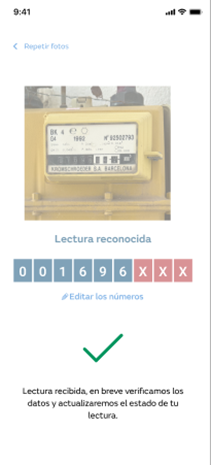

La toma de lectura se puede realizar desde diferentes puntos de la app y consta de diferentes pasos.
Como primer paso, si en la instalación de la app no se había permitido el uso de la cámara, volverá a saltar el pop-up preguntando:

en el histórico de lecturas, se verá la fotografía y el estado de la lectura con valor “Lectura recibida”
en la entidad Contador se actualiza el estado a PENDING_TO_VALIDATE
en la entidad Lectura se actualiza el estado a PENDING_TO_VALIDATE
Si se produce algún error, se mostrará un mensaje informando de la situación.
Si el dispositivo no tiene conexión a Internet, se almacenan las llamadas y no se produce el envío hasta que no detecta que hay conexión.